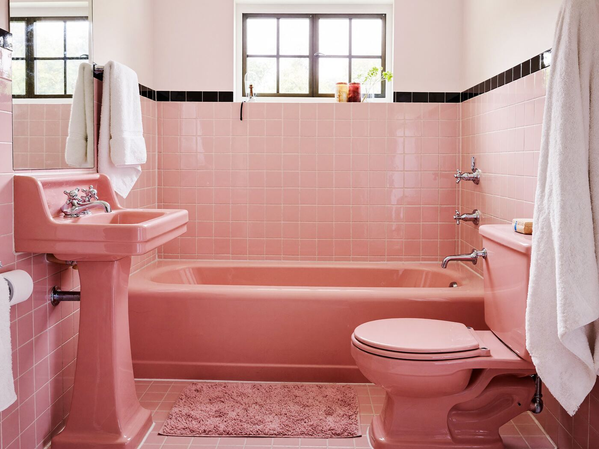
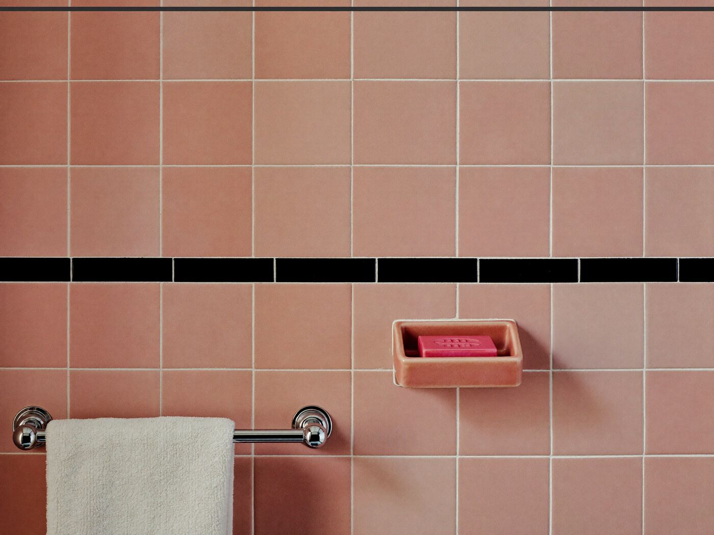
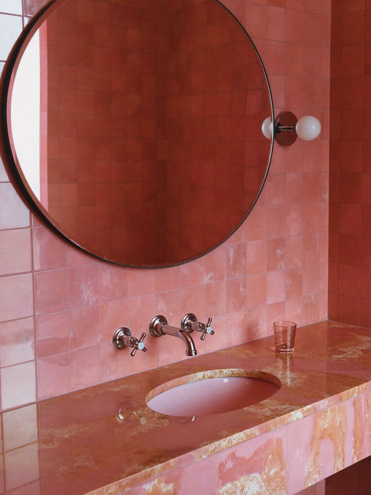

Stories · Pink bathrooms
In defense of the pink bathroom
Mamie pink tile, a tub to match and a black trim line holding it all together. It’s a whole mood, and nobody should rip it out.

Somewhere near you, a contractor is standing in a 1958 bathroom holding a sledgehammer and looking sorry for it. The tile is pink. The tub is pink. So are the sink and the toilet and, if the first owners were really committed, the bath mat. The listing called it “original condition,” which is real-estate talk for “budget for a remodel.” We’d like a word before anyone swings.
How the country went pink
Pink went mainstream in the fifties, and a lot of people give the credit to Mamie Eisenhower. She wore pink to her husband’s 1953 inauguration and liked the color enough to use it all over the private rooms of the White House. Whether she started the trend or just rode it, manufacturers were ready. Pink tile, pink enameled tubs and pink china sinks and toilets went into new houses all over the country, from tract ranch houses to motels. In a desert town that turns pink at sunset every evening, it looked right at home.
Built to outlast you
These bathrooms were made to last. The tile was usually set in a thick bed of mortar over wire mesh, not glued to drywall, which is why a sixty-year-old wall is often still flat and tight. It’s also why taking one out means a loud, dusty week. The tub is enameled cast iron and the sink is vitreous china. Short of dropping a bowling ball, you won’t hurt them.

It isn’t dated. It’s dated 1958, which is different.
Living with it

You don’t have to love pink to keep a pink bathroom. You just have to stop fighting it. A few things that work:
- Keep it crisp. White towels, chrome and a little black, which is what the trim band was doing all along.
- Or go all the way. A pink shower curtain, a pink mat, a small flamingo print. At some point it stops being a bathroom and becomes a room with a point of view.
- Regrout and recaulk. Fresh white grout makes old tile look almost new in an afternoon.
- Change the small stuff. A new toilet seat, a better light and good towels make more difference than you’d think.
- Keep the spares. If there’s a box of the original tile in the garage, guard it. Matching sixty-year-old pink is close to impossible.
A pink bathroom is one of the few rooms in a house that still looks like the year it was built. There are fewer of them every year, and new ones never look quite the same. If you’ve got one, keep it, hang up a good towel and enjoy your bath.